Project
Keep the project folder, XML, assets and editable trail data together. This is the version you return to for authoring.
THE RELEASE GUIDE · VERSION 1.0.7
Create markers, record trails, organize your pack and refine it in the game. Code when you want to. Use the controls when you don’t.
START HERE
Create and organize markers and trails through the interface; use XML when you want direct control. Your editable .cilantro project and the compiled .taco pack serve different purposes.
Keep the project folder, XML, assets and editable trail data together. This is the version you return to for authoring.
Stuff Taco Now! saves and builds the reader-facing .taco. Test it in the reader you intend to support.
Run the published TacoStuffer.exe. The application runtime and icon are bundled. Your project files remain separate.
Choose Project → New… or Ctrl+N. Enter a project name and parent folder. Set the optional compiled output folder, or leave it blank to use the project's EXPORT folder. Create the project.
Select a category in the Outliner or Quick Menu. Use + Category for another group. Display names are the readable labels; internal category names make up XML paths.
Start Guild Wars 2, enter a playable map and wait for the connection indicator to show the map. Open a project with an XML document, then click Open Game Overlay. A separate helper addon is not required for the normal telemetry connection.
In the overlay's Markers tab, choose the target XML and category. Move your character to the location and click + New Marker. Select the recorded marker to edit it.
Add Icon (Markers) from Add Attributes. The parent choice adds image and size together. Click Choose Asset, import/select an image, and adjust its size. Use separate child choices when you want only one field.
Press Ctrl+S, then Stuff Taco Now!. Check the build result, reload the pack in your target reader, and verify the appearance and placement. Keep the editable project as your source.
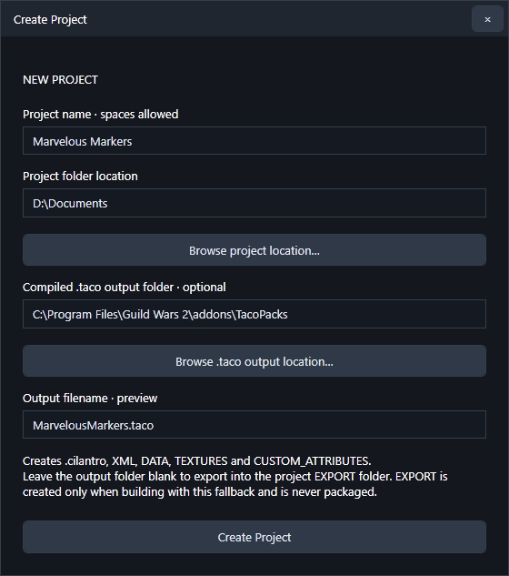
Enlarge ↗THE WORKSPACE
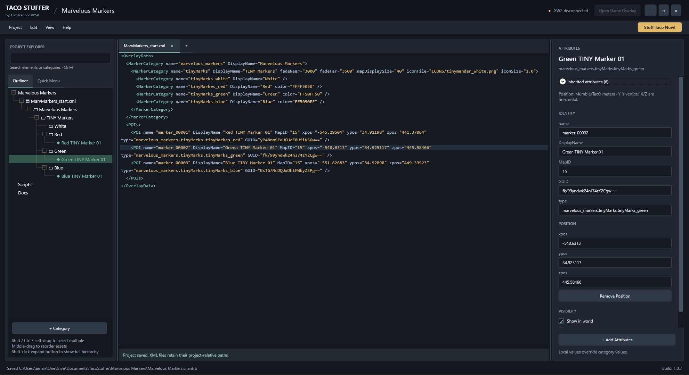
Enlarge ↗| Area | Use it for |
|---|---|
| Project menu | Create/open/save projects, create documents, import a pack and open Project Assets. |
| Edit menu | Undo, Redo, History, Preferences and Project Settings. |
| View menu | Standalone Overlay, experimental Play in App, Standard Layout and Reset Layout. |
| Help menu | Open the online Documentation, or choose About for version, developer and notices. |
| Outliner / Quick Menu | Find project items or work with category organization and visibility. |
| Document tabs | Edit XML, Lua, Markdown and plain text. Closing a tab does not delete its document. |
| Attributes pane | Edit local values, inspect inheritance and add controls for selected items. |
| Stuff Taco Now! | Save and compile the project into its configured output locations. |
Resize panels with their dividers. Document tabs support closing, moving between available panes and floating views. Drag a tab away to detach it; use its tab controls/context menu to organize the workspace. View → Reset Layout restores the layout when needed.
ORGANIZE
XML documents contain category hierarchies and their markers/trails. Editable trails expand into segments, then points. Scripts and Docs have their own sections; closed XML documents remain available in the project.
name is the unique internal asset name and cannot contain spaces. DisplayName is the readable label and can contain spaces. Category references still use internal paths even when dropdowns show indented display names.
Batch rename selected recorded markers/trails from the pane or Outliner Rename. Numbering follows hierarchy order. qd_check becomes qd_check01, qd_check02; qd_check_001 keeps three-digit padding. A display name such as Checkpoint becomes Checkpoint 01, Checkpoint 02. Existing conflicting internal names are skipped.
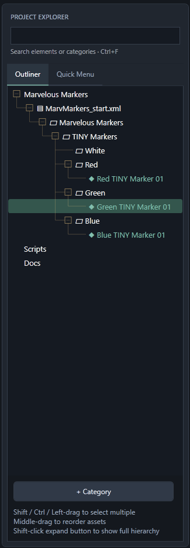
Enlarge ↗The Quick Menu mirrors the pack menu you will see in your pathing tool: its category hierarchy, display names, separators and visibility toggles. Use it to organize and preview how users will navigate your pack.
Use category checkboxes to preview visibility. Middle-drag categories: the center of a row makes a child, and its top/bottom makes a sibling. Right-click or press F2 to rename. Separators organize the menu without behaving like ordinary selectable marker categories.
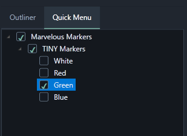
Enlarge ↗ATTRIBUTES
Select a category, marker or trail and click + Add Attributes. The list includes built-in controls and project custom definitions. Only applicable controls are offered for the selection.
Checking Icon (Markers) adds both iconFile and iconSize, with the normal combined controls. Texture similarly adds texture and trail scale. Independent bundle options are included without adding unrelated action dependencies.
Open the boxed + and select just Icon Size, for example. Only iconSize is added to the XML and local pane. Dependent/custom bundles keep their existing option rules.
Checking a child clears its parent choice; checking the parent clears its child choices. You can choose several children together. If an earlier partial bundle is missing controls, select its parent again to complete it without replacing edited values.
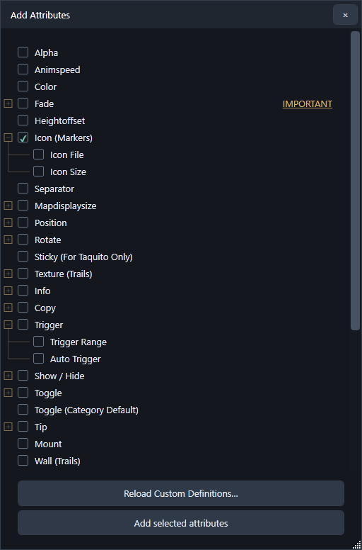
Enlarge ↗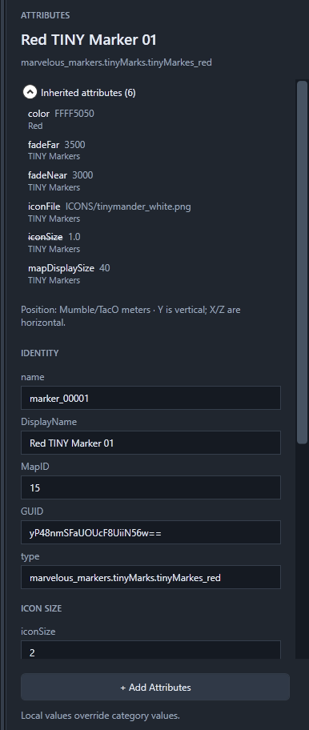
Enlarge ↗For markers and trails, the collapsed Inherited attributes list shows effective category values. Local controls show attributes stored on the selected item. A crossed-out inherited name has a local override. Right-click an inherited entry and choose Override, or add that field through Add Attributes. The existing effective value becomes local.
For example, set only iconSize on a parent category and give children their own iconFile. POIs can use the category size and the appropriate child icon. Adding an override to multiple objects preserves each object's inherited value rather than forcing one generic default.
Remove a local value from its field-label context menu to restore its fallback. A standalone field has its own Remove button; removing a full group removes its grouped local values. Multi-selection applies edits to the selected applicable objects.
Color fields include a picker. Standard color uses ARGB (AARRGGBB); checkpoint colors use RGBA (RRGGBBAA). Use the field's format label rather than moving the alpha bytes between formats.
PROJECT ASSETS
Open Project → Assets…, or click an icon/texture preview marked Choose Asset. The left side shows project asset folders; the right side shows the current folder's files. Filter Search narrows filenames, and the type filter limits the visible asset kinds.
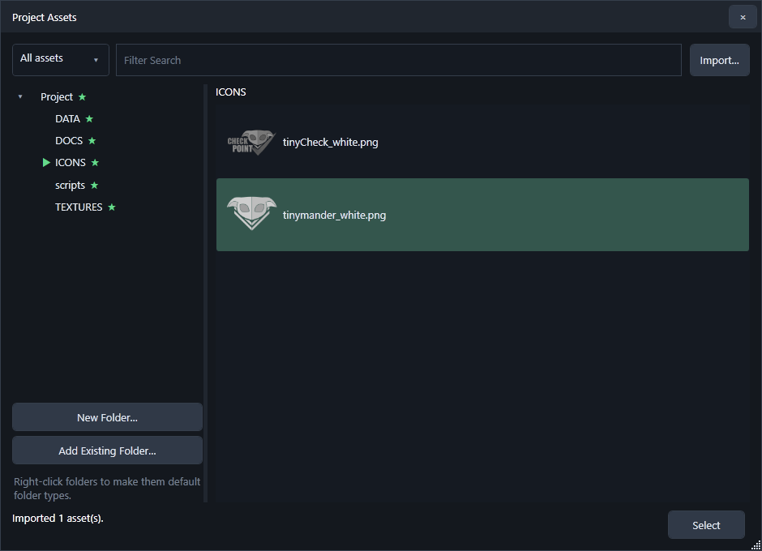
Enlarge ↗A green star marks a folder used as a default. The green pointer marks the current folder. Right-click a folder to choose one of these roles:
| Role | Used for |
|---|---|
| Core XML | New core XML document location; the project root is the default. |
| Docs | Markdown and plain-text documents. |
| Scripts | Lua source documents. |
| Icons (markers) | Starting folder for marker image selection. |
| Textures (trails) | Starting folder for trail texture selection. |
| Trail Data | TRL files and trail insertion; DATA is the initial default. |
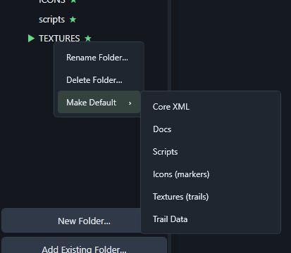
Enlarge ↗The initial image location is TEXTURES; separate icon/texture defaults are optional. Project storage such as EDITABLE_TRAILS is managed by the application. Do not treat it as an ordinary image folder.
The manager reflects files in its displayed project folders. Documents need an explicit import/adoption into the project to appear as editable Outliner documents; placing a text file on disk alone does not register an editor document.
REUSE A ROUTE
You can bring a trail into the project without importing its entire source pack.
.trl files.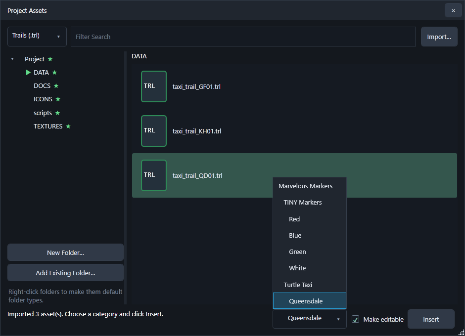
Enlarge ↗The trailData field near the top of a trail's Attributes pane controls its final TRL path/name for compile and lookup. Keep it project-relative and valid. Changing it does not rename the editable trail's internal point identities.
STANDALONE OVERLAY
The overlay requires a connected GW2 client on a playable map, an open project and an XML authoring target. Open Game Overlay opens recording controls separately from the game-bound marker/trail rendering.
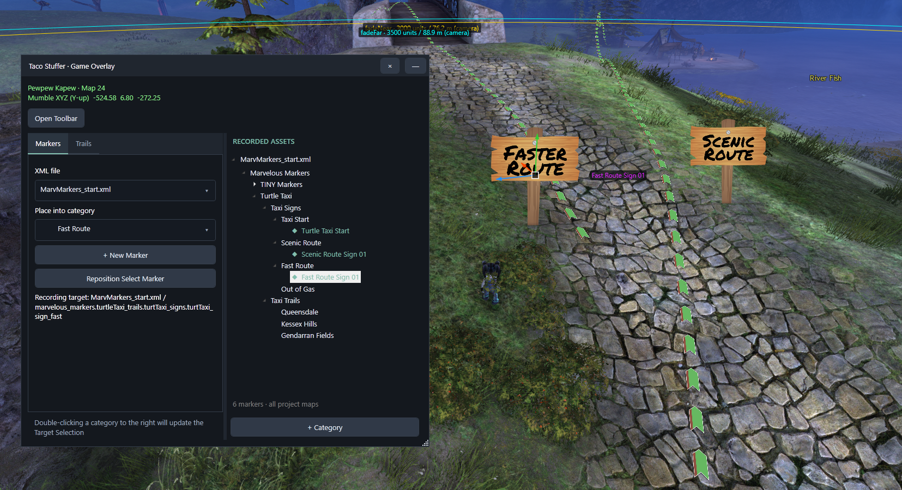
Enlarge ↗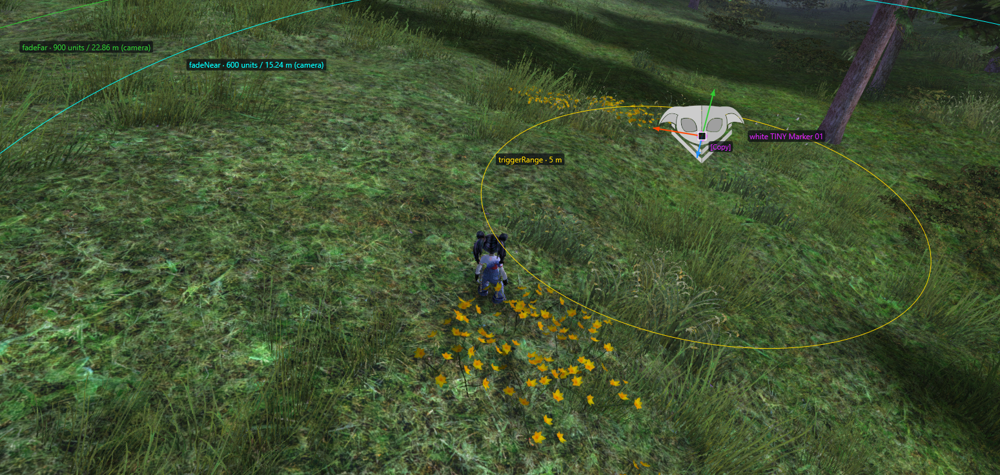
Enlarge ↗Enable Show Marker Range in Visual Settings to draw thin labeled rings for selected markers' effective ranges, including inherited values. Rings can appear in the world, map and minimap. Trigger/Info/checkpoint ranges are meters; Fade values use game inches and are converted for ring geometry. The Fade label identifies camera-distance semantics.
Resize the control window and move it outside the game bounds. Rendering stays aligned to the game. In standalone mode the selected main window can sit above the overlay; overlay controls remain above the toolbar, which remains above Info/Copy frames. Other applications hide the overlay presentation.
Minimize hides the large controls but keeps the rendering session and separate toolbar active. Standalone mode leaves a small TS restore button near the top right. In Play in App, Open Overlay turns green while the controls are minimized; click it to restore. Closing the overlay ends its session.
TOOLS AT A GLANCE
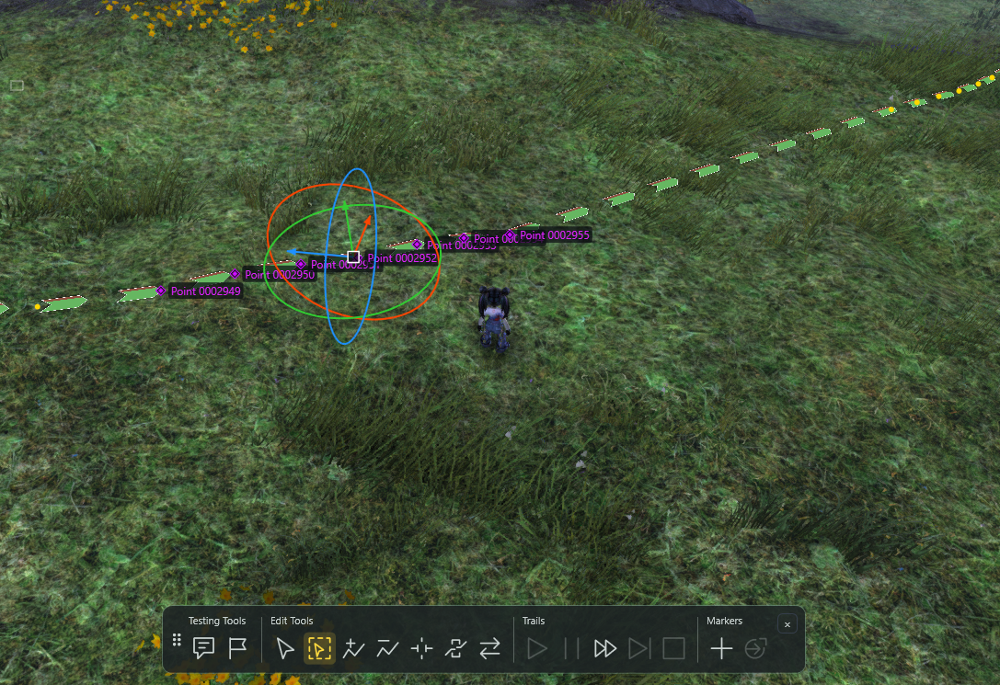
Enlarge ↗Click Open Toolbar in the overlay controls. Drag its left grip to move it; its position is remembered. Gray is inactive, green is hover, and Taco yellow indicates an active tool/test. Hover an icon for its tooltip. The toolbar stays available when the control window is minimized.
| Section / tool | What it does |
|---|---|
| Testing · Marker Interactions | Enables preview interaction/behavior actions and automatic copy tests. Click again to turn it off. |
| Testing · Checkpoints | Starts or cancels temporary checkpoint testing; select a starting checkpoint first. |
| Edit · Selection | Normal selection/manipulator editing. Shift adds or ranges point selections; Ctrl toggles. |
| Edit · Marquee | Left-drag a selection box without orbiting the camera. Shift adds; Ctrl toggles. Esc exits. |
| Edit · Insert Point | Click an editable rendered trail to add a point along its clicked edge. Tool stays active. |
| Edit · Remove Point | Click a point to delete it and reconnect its surviving neighbors. |
| Edit · Split Segment | Click an interior point to delete it and leave a gap, creating separate segments. No confirmation prompt; Undo is available. |
| Edit · Merge Segments | Choose endpoints from two different editable segments on the same map, then Enter. The earlier Outliner segment joins to the later one, preserving their point flow and the earlier trail's styling. |
| Edit · Reverse Segment | Click any point to reverse that entire segment. Coordinates and IDs stay stable; point order changes. Undo is available. |
| Trails · Start / Pause / Continue | Use the existing selected trail/recording target. Start requires a trail; Continue resumes paused/resumable recording. |
| Trails · New Segment / Stop | Pause first to start another segment. Stop finishes recording. |
| Markers · Add / Reposition | Place a marker at the character, or move the selected marker to the character. |
EDITABLE TRAILS
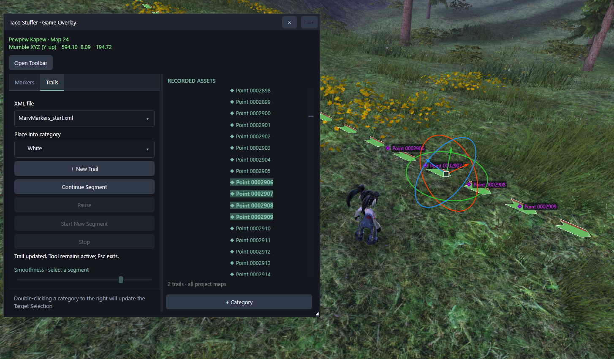
Enlarge ↗The smoothness/density control ranges from 1 to 10; higher recording values keep more samples. Existing segment adjustment works on a segment selection. Interpolation can smooth retained data but cannot recreate a route detail that was never recorded.
Expand a segment to reveal its points. Shift selects a range; Ctrl combines selections. Move selected points together with the manipulator. Parent selection does not automatically select every point.
The point-delete confirmation offers Delete to reconnect survivors, or Delete and Split Segment to leave gaps at the deleted stretches. The toolbar also provides persistent insert/remove/split/merge/reverse tools.
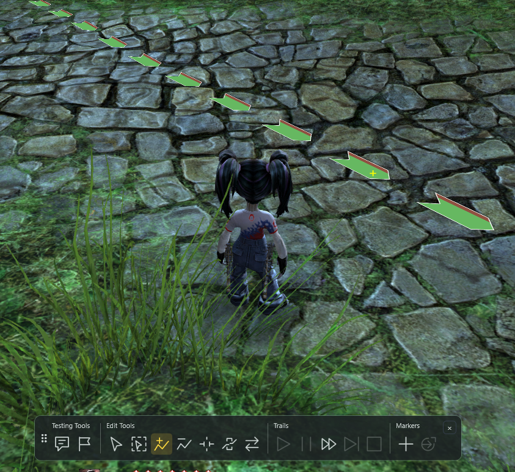
Enlarge ↗Split preserves the original hierarchy flow. Merge connects the earlier segment's end to the later segment's start; click order does not silently flip either route. Use Reverse Segment explicitly when needed. An emptied donor trail may remain in XML to preserve GUID/script references. Review the result and Undo if it is not what you intended.
CODE IS OPTIONAL
Choose Project → New Document and select XML, LUA, Markdown or Plain Text. XML initially uses the project root; Lua uses scripts; Markdown/text use DOCS. Asset folder defaults can change those destinations. New XML documents use the project's shared pack heading; edit category information afterward if a distinct heading is intentional.
| Document | Editing and project behavior |
|---|---|
| XML | Syntax-colored editing stays synchronized with selected elements. A dim working-line indicator identifies the active element/line without replacing your text selection. Right-click a line for Add Comment Before / After. |
| Lua | Syntax-colored authoring and pack packaging. Taco Stuffer does not execute or simulate Lua. |
| Markdown | Formatting toolbar and a Preview window for the rendered document. |
| Plain text | Simple unformatted editing for notes and supporting files. |
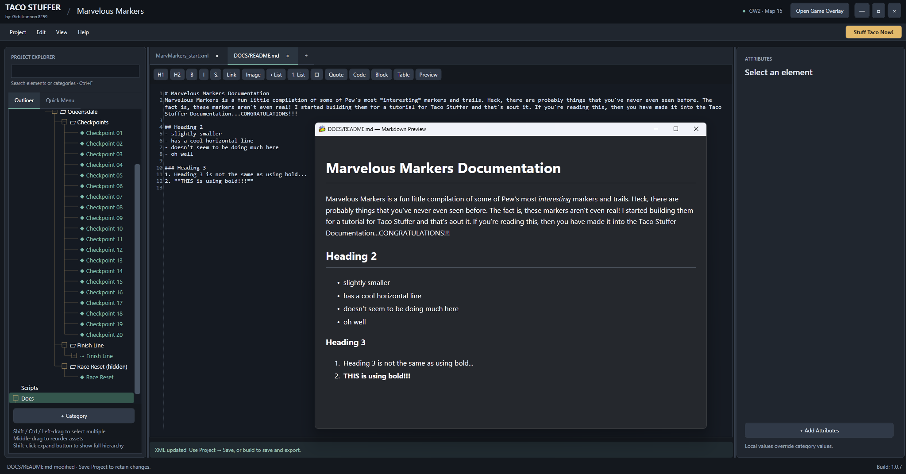
Enlarge ↗Right-click documents in the Outliner for rename/delete, including closed documents; F2 supports rename. Renaming/deleting files does not rewrite references inside your scripts/text. Use Save Project to commit document changes to disk.
The Script attribute tools help select project libraries/functions and assign script-trigger, script-focus, script-tick, script-filter and script-once. Hook values are function calls, not filenames. The helper can create/open a pack.lua loader; review its require paths and load order.
Execution requires a compatible Blish HUD Pathing Lua runtime. A successful Taco Stuffer preview or compile is not a script execution test. Other readers do not automatically gain Lua support from the presence of those files.
Use Ctrl+Z, Ctrl+Shift+Z or Edit → History… to review supported edits. Save the project regularly. Undo history is an editing aid, not a replacement for a backup of project files or externally modified assets.
INTERACTIVE MARKERS
info contains instructions and supports multiple lines. infoRange is the display radius in meters; lowercase inforange is accepted. When omitted, the radius falls back to effective triggerRange, then 2 meters. Enable Show marker information in Visual Settings. The layout-preview button checks appearance, not proximity.
copy is clipboard text. copy-message is the confirmation; {0} inserts copied text. Trigger Range and Auto Trigger are independent fields in the Trigger group. They are shared by actions that use them and do not require Copy merely to exist.
For proximity marker actions, configure triggerRange in meters and choose automatic or manual interaction. Bind Interact with nearby marker in Custom Keybinds for manual tests. Category/separator Copy uses its text/message without a proximity requirement.
Clipboard permissions are Always, Only when interacted with or Never. Automatic copy tests additionally require Test Marker Interactions and the appropriate permission. Copying only puts text on the clipboard; it does not send chat or teleport.
Show/Hide and Toggle reference categories. Behavior selects supported activation/persistence modes; its preview reset action clears test behavior state. Mount, visibility and other controls can also affect whether an item is visible. Requirement messages point out missing ranges, targets or test conditions.
TAQUITO CHECKPOINTS
Checkpoint attributes describe a linked route for Taquito. Taco Stuffer supplies authoring controls and a temporary checkpoint test mode. These custom fields are not assumed to execute in other pathing readers.
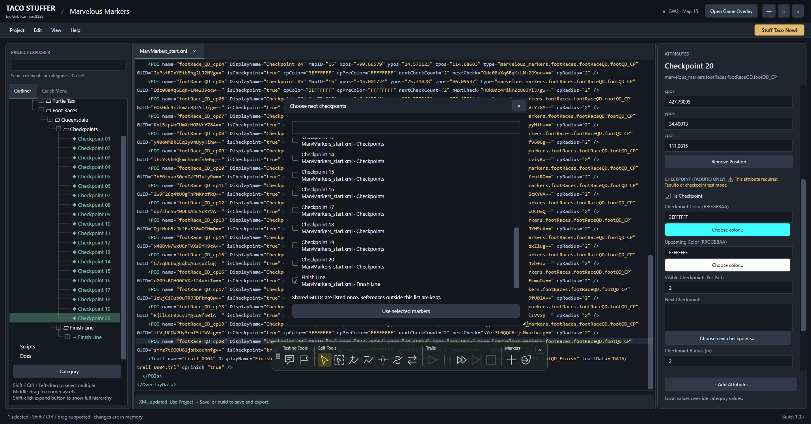
Enlarge ↗| Field | Meaning |
|---|---|
isCheckpoint |
Boolean, written true/false. Enables a checkpoint node. |
cpColor / cpPreColor |
Current/upcoming colors in RRGGBBAA; alpha is last. Use Choose color rather than rearranging ordinary ARGB values. |
nextCheck |
One or more next GUIDs, comma-separated. Use the chooser to avoid typing mistakes. |
nextCheckCount |
Nonnegative look-ahead depth. A value of 2 follows two links along each fork path. |
cpRadius |
Checkpoint contact radius in meters. |
cpFinish |
Independent true/false finish flag. Can be added to a marker or trail; a short two-point trail can act as a finish line. |
cpReset |
The first checkpoint GUID for resetting the linked course. The Reset checkbox enables these controls; this value is a GUID, not a boolean. |
resetMessage |
Optional reset confirmation text. Disable/omit the message when no popup is wanted. |
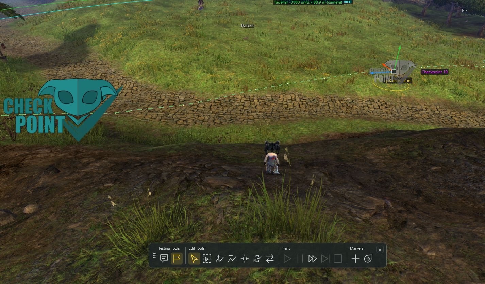
Enlarge ↗A dedicated reset marker does not need Is Checkpoint enabled. Enable its Reset checkbox, choose the first checkpoint and configure Trigger/manual interaction or Auto Trigger. Checkpoint Finish Line is a separate Add Attributes entry.
Turning off Is Checkpoint removes its checkpoint-specific option fields from XML while keeping reset controls independent. The ordinary resetguid control resets explicit behavior GUID targets; cpReset identifies a checkpoint route from its first GUID. Keep GUIDs unique and check links after copying/moving nodes.
PREFERENCES
Open Edit → Preferences…. Visual Settings affect the authoring preview; they do not rewrite pack sizes. Several controls update live while the dialog is open. Save Preferences to retain your choices; Cancel discards the dialog changes.
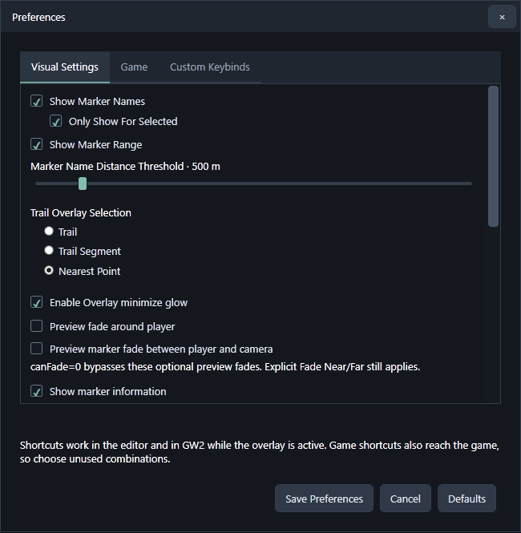
Enlarge ↗| Setting | Effect |
|---|---|
| Show Marker Names | Enables name labels. Only Show For Selected limits them to selected markers; both choices default on. |
| Marker Name Distance Threshold | Limits name visibility by player distance in meters, with live preview. |
| Show Marker Range | Shows effective range rings for selected markers in the world/map/minimap; defaults off. |
| Trail Overlay Selection | An ordinary ribbon click selects the whole trail, its segment or the nearest point. Modifier-based point selection and dedicated edit tools remain available. |
| Enable Overlay minimize glow | Pulses the standalone TS restore button to help locate minimized controls. |
| Preview fade around player / between player and camera | Optional authoring fades; canFade=0 bypasses these optional effects. Explicit Fade Near/Far still applies. |
| Show marker information / Marker clipboard | Controls Info HUD visibility and clipboard permissions. |
| World / map / minimap multipliers | Independent application preview scaling for markers and trail widths; exported XML values stay unchanged. |
| Map trail style | Choose textured TacO-style or solid Blish-style map preview. |
| Game | Choose the GW2 executable used by Play in App. |
| Custom Keybinds | Assign recording, marker, category and interaction actions. Choose unused combinations; shortcuts can also reach GW2. |
Scroll the Visual Settings pane for controls below those pictured. Defaults restores preference defaults; check your desired settings before saving.
PROJECT SETTINGS & OUTPUT
Edit → Project Settings… changes the main compiled output folder and two optional alternate marker-pack locations. Stuff Taco Now! writes the same pack to each configured unique location. Blank main output uses the project's EXPORT folder; empty/duplicate alternate locations are skipped.
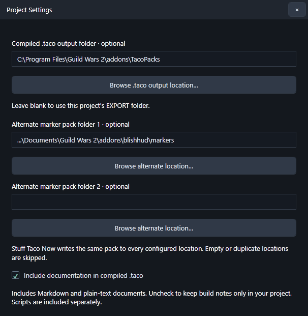
Enlarge ↗Use these destinations to test one build in several installed readers without manually copying it every time. Save Project after changing project settings. Reload the pack in the reader after compilation; file output alone does not guarantee that reader has refreshed it.
Include documentation in compiled .taco controls Markdown and plain-text project documents. Turn it off to keep build notes in the project only. Lua libraries are packaged separately; this switch does not enable or disable Lua execution.
Choose Project → Import .taco File…. The importer retains project-relative assets and supported XML/script content. Choose editable trail conversion when you need point editing; binary references can be kept for faithful asset preservation. Inspect missing-file warnings and verify imported resources before changing or distributing the pack.
__TacoStuffer_TestBuild.txt when present.EXPERIMENTAL WORKSPACE
View → Play in App (experimental) hosts the game in the editing workspace. For ordinary recording you can keep GW2 standalone instead.
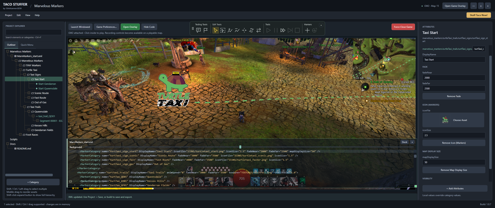
Enlarge ↗Quit the hosted game normally before returning to Standard Layout. The button/menu becomes available when the session is closed. Force Close Game terminates a stuck session; it is not the normal layout-switch command. Closing Taco Stuffer while hosting first handles the active game session.
QUICK LOOKUP
Use this as a field index for the built-in controls. Individual choices are available for independent bundles; some dependent options stay grouped. The pane's labels, pickers and requirement messages are the primary authoring interface. Reader-specific support still needs testing.
| Control | XML fields · catalog starting values | Purpose |
|---|---|---|
| Alpha | alpha 1.0 |
Overall opacity. |
| Animspeed | animSpeed 0 |
Trail texture animation speed. |
| Color | color FFFFFFFF |
Tint; 8-digit standard color is AARRGGBB. |
| Fade | fadeNear 3000fadeFar 3500 |
Camera-distance fade thresholds in game inches: 3000 ≈ 76.2 m; 3500 ≈ 88.9 m. |
| Heightoffset | heightOffset 0 |
Vertical visual offset; coordinates are not moved by this field. |
| Icon (Markers) | iconFile TEXTURES/marker.pngiconSize 1.0 |
Marker image plus size. Supports independent image/size authoring. |
| Separator | isSeparator 1 |
Menu separator/category presentation. |
| Mapdisplaysize | mapDisplaySize 20scaleOnMapWithZoom true |
Map/minimap marker sizing and zoom scaling. |
| Position | xpos 0ypos 0zpos 0 |
x/y/z coordinates; Y is vertical, X/Z horizontal. Optional Add Attributes choice is category-only; markers record coordinates automatically. |
| Rotate | rotate-x 0rotate-y 0rotate-z 0 |
Axis-specific marker rotation. |
| Sticky (For Taquito Only) | screenSticky truestickyDistance 300stickyHideOriginal truestickyX 0stickyY 0stickyScale 1.0 |
Taquito screen-sticky presentation, range and original-world-marker behavior. |
| Texture (Trails) | texture TEXTURES/trail.pngtrailScale 1.0 |
Trail texture plus scale. Supports independent texture/scale authoring. |
| Visibility | inGameVisibility 1miniMapVisibility 1mapVisibility 1 |
World, minimap and full-map visibility controls. |
| Info | info emptyinfoRange 2 |
Multiline instructions and display radius in meters. |
| Copy | copy emptycopy-message '{0}' copied to clipboard. |
Clipboard text and optional confirmation; {0} inserts text. |
| Trigger | triggerRange 2autoTrigger false |
Shared activation range in meters and automatic entry activation. |
| Show / Hide | show emptyhide empty |
Category targets for interaction actions. |
| Toggle | toggle emptytoggleCategory empty |
Category toggle target; toggleCategory is an alternate target alias and stays opt-in when absent. |
| Toggle (Category Default) | defaultToggle true |
Default category checked state. |
| Tip | tip-name emptytip-description empty |
Tooltip title and description. |
| Mount | mount raptor |
Allowed mount states. |
| Wall (Trails) | isWall false |
Trail wall-style ribbon orientation. |
| Hidden Category | isHidden false |
Category menu hiding. |
| Bounce | bounce bouncebounce-height 2bounce-duration 1bounce-delay 0 |
Bounce/rise mode and motion timing/height options. |
| Behavior | behavior 0invertBehavior falseresetLength 0 |
Choose a supported behavior mode; inspect requirements and preview state. |
| Can Fade | canFade true |
Permission for optional proximity/occlusion-style preview fades, separate from explicit fade thresholds. |
| Checkpoint Finish Line | cpFinish true |
Independent Taquito checkpoint finish marker/trail. |
| Checkpoint (Taquito Only) | isCheckpoint truecpColor FFFFFFFFcpPreColor FFFFFFFFnextCheckCount 2nextCheck emptycpRadius 2cpReset empty |
Taquito checkpoint links, colors, radius and reset controls. |
| Reset GUID | resetguid emptyresetMessage Race reset. |
Explicit behavior GUID reset targets, with optional message. |
| Script (Authoring Only) | script-trigger emptyscript-focus emptyscript-tick emptyscript-filter emptyscript-once empty |
Blish HUD Lua hook function calls; authoring/packaging only here. |
Catalog starting values are authoring defaults, not a promise that every runtime uses the same omitted-attribute fallback. For example, previewing an omitted marker height offset differs from explicitly authoring heightOffset="0". Keep inherited values and intended reader behavior in mind.
WHEN SOMETHING LOOKS WRONG
Enter the world rather than character selection/loading. Confirm the reported map/character match the intended client, then allow telemetry to refresh. Recording also needs an open project and XML target. Report the game-launch method if the link never becomes ready.
This is a reported 1.0.7 issue awaiting the next patch. Continue with existing displayed/default folders and Import/New Folder. The documentation does not require this button for the main workflows.
Collapse the segment's point list when it is not needed. Thousands of expanded rows can affect responsiveness; this is a known pending performance fix. Shift-expanding a branch deliberately stops at segments.
Check the yellow toolbar state and on-screen tool message. Press Esc or choose Selection. Insert/remove/split/reverse tools remain active for repeated operations.
Check map, effective visibility, category checkboxes, mount/behavior state, image/texture paths, alpha, fade and height offset. Verify referenced TRLs exist. Use reader reload and check its support for custom attributes. Preview size multipliers do not change exported size fields.
Re-select the parent Icon bundle in Add Attributes to fill missing members without overwriting edited values. A deliberate child-only Icon Size should stay independent. XML only records the fields present, not which checkbox was used in an earlier build.
Read requirement messages. Verify targets/GUIDs, range units, clipboard permission, interaction binding and the appropriate toolbar test mode. For checkpoints, choose a start and leave/re-enter its region after starting inside it. Lua is not executed by this application.
Check Project Settings and save the project. Blank main output uses EXPORT. Alternate locations are additional destinations, not alternate project storage folders. Confirm which folder the reader is monitoring.
Close the hosted game session first, then choose Standard Layout. Force Close Game is available for a stuck session.
For a report, include Help → About version, steps, expected/actual result, target reader and a small example when possible. For performance, include approximate marker/trail/point counts and whether a point tool or large Outliner branch is active. Application logs are under %LOCALAPPDATA%\TacoStuffer\.
Keep a backup of your authoring project. Review the application's LICENSE.txt for software terms, and the permissions for images/scripts/packs you import before redistribution. Documentation screenshots use the supplied Marvelous Markers example project.